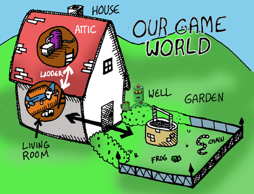
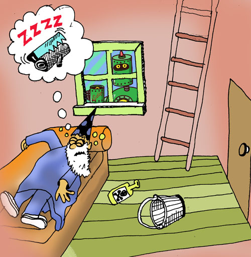
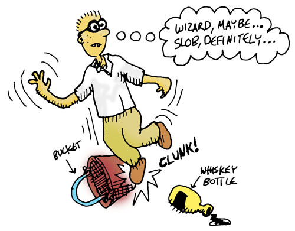
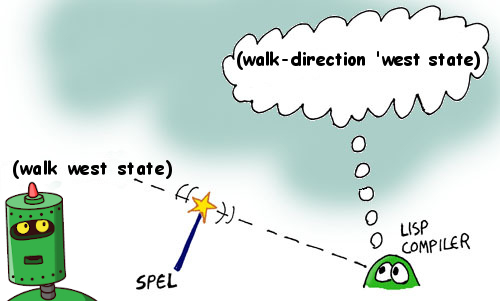

들어가면서
이 글은 옮긴이가 내용 구성 및 표현의 효과를 위하여 원전과 다소 다르게 더하거나 뺀 부분이 있음을 알립니다.

- 원저자: Conrad Barski, M.D.
- 편역: netpyoung
Casting SPELs (Clojure)
리스프(Lisp, 리슾)를 아는 사람이라면, 리스프가 다른 프로그래밍 언어들과 매우 다르다고 말할 것입니다. 이는 실로 놀라울 정도로 많이 다릅니다. 이 만화를 통해 리스프가 얼마만큼 강력한지, 리스프의 독특한 디자인을 통해 배워보도록 하겠습니다.

리스프 언어에는 여러가지 종류가 있는데, 그 중 클로저로 진행하도록 하겠습니다.
clj 명령어를 통해 클로저의 REPL을 실행합니다.
$ clj
Clojure 1.11.1
user=>
REPL은 Read Eval Print Loop의 약자입니다. REPL은 사용자가 입력한 코드를 읽고, 실행하고, 결과를 출력하고, 다시 반복합니다.
user=> (+ 1 2)
3
user=>
user=>에서 user는 현재 네임스페이스의 이름입니다. 네임스페이스안에서 정의한 함수/변수들은 네임스페이스에 저장됩니다. ns는 namespace의 약자이며, 네임스페이스를 바꿀 수 있는 매크로 입니다.
다음과 같이 (ns spel)로 네임스페이스를 spel로 바꿀 수 있습니다.
user=> (ns spel)
nil
spel=>
REPL을 종료하려면
- Window에서는 Ctrl-z를
- macOs/Linux에서는 Ctrl-d를 누르면 됩니다.
짚고넘어갈것
- 클로저(Clojure)
- clj 명령어
- REPL 종료법
신택스 그리고 시맨틱
모든 컴퓨터 언어는 신택스(Syntax, 문법/구조론) 와 시맨틱(Semantic, 의미론) 으로 이루어진 코드를 가지고 있습니다.
신택스 는 프로그램에서 컴파일러가 무엇이 무엇인지 알 수 있도록 따라야만 하는 프로그래밍 언어의 기본 빼대입니다. 이로써 무엇이 함수인지, 변수인지 등을 알 수 있습니다.
시맨틱 은 프로그램의 좀 더 "랜덤"한 내용을 다룹니다. 프로그램의 특정 지점에서 어떤 변수가 사용가능한지 아닌지 같은 것들이 있습니다.
| syntax & semantics | |
|---|---|
| Syntax | 어떻게 구성되어야 하는가 |
| Semantics | 어떻게 동작하는가 |
리스프의 첫 번째로 특별한 부분은 메이저 프로그래밍 언어 중 가장 간결한 신택스를 가지고 있다는 점입니다. 기본적으로 리스프 신택스는 리스프 컴파일러에게 넘겨주는 텍스트를 리스트(list)로 넘기도록 강제합니다. 필요에 따라 중첩된 리스트 역시 가능합니다.
리스트의 시작과 끝은 괄호로 되어있습니다:
;; 쌍번점(`;`)는 주석을 의미합니다.
(list 1 2 3)

추가적으로, 리스프 컴파일러는 두가지 모드를 사용하여 코드를 읽습니다: 코드 모드와 데이터 모드
데이터 모드일때, 리스트에 아무거나 넣을 수 있습니다. 그러나, 컴파일러는 코드 모드에서 코드를 읽기 시작합니다.
| 모드 | 리스트 |
|---|---|
| 코드 | 리스트를 코드로 읽고 실행된다 |
| 데이터 | 리스트를 데이터 자체로 취급한다.(실행하지 않는다) |
코드 모드에서는 리스트는 "폼(form)" 이라 불리는 특별한 형태의 리스트여야만 합니다.

폼은 리스트이며, 이 리스트의 첫번째 심볼이 컴파일러가 이해할 수 있는 특별한 단어여야 합니다 - 보통은 함수의 이름이며, 컴파일러는 리스트의 나머지 부분을 함수의 인자로 넘김니다. 그리고 이러한 인자들을 읽을때, 데이타 모드로 변환하라고 지정하지 않는한, 코드 모드라 가정하고 읽습니다.
짚고넘어갈것
- 신택스와 시맨틱
- 코드모드와 데이터모드
- 리스트
- 폼
- 주석(
;)
게임 세상을 위한 데이타 정의하기
폼에 대해 더 이해하기 위해, 폼으로 우리가 만들 게임 세상을 데이타화 시켜봅시다.
우선, 게임에는 플레이어가 집고 사용가능한 오브젝트(Object)들이 있습니다 - 이러한 오브젝트들을 정의해 봅시다:
(def 상수_리스트_모든오브젝트 '(:위스키병 :양동이 :개구리 :사슬))
자, 이제 이 줄을 분석하고 그 의미를 살펴봅시다: 리스프 컴파일러는 항상 코드 모드에서 읽기 시작하고 형식을 기대하기 때문에 첫 번째 기호인def를 명령어 라고 간주합니다.
def는 define 즉 정의하다의 약자입니다.
이 명령어는 주어진 값으로 변수를 설정합니다: 변수 이름은 상수_리스트_모든오브젝트이며, 키워드로된 오브젝트들이 리스트안에 들어있습니다.
편의상 변하지 않는 변수 이름 앞에 상수_를 붙였습니다.
이 리스트는 데이타이므로, :위스키병가 명령어로써 실행되지 않게 하기 위해 컴파일러를 데이타 모드로 변환시킬 필요가 있습니다.
리스트 앞의 붙은 따옴표(')는 컴파일러를 변형시키기 위한 명령어입니다.
오브젝트 이름 앞에 콜론(:)이 붙어 있는데, 클로저(Clojure)언어에서는 이를 키워드(keyword)라 합니다. 키워드는 심볼(symbol)에 비해 비교하는 연산에서 빠릅니다.

이제 게임 세상에 쓰일 오브젝트들을 정의해 봤습니다. 이제 더 나아가서 게임 세상의 지도를 정의해 보겠습니다. 여기에 게임 세상이 어떻게 생겼는지 나와있는 그림이 있습니다:

이 간단한 게임에는 3개의 다른 장소가 있습니다: 거실과 다락방을 가진 집이 있으며 그리고 정원도 있습니다.
이제 게임 세상을 표현하는 상수_전체지도라는 새로운 변수를 정의해 봅시다:
(def 상수_전체지도
{:거실
{:설명
"[마법사의 집 - `거실`]: `마법사`가 소파에 코를 골며 자고있다."
:사전_경로 {:서쪽 [:문 :정원]
:위층 [:계단 :다락방]}}
:다락방
{:설명
"[마법사의 집 - `다락방`]: 구석에 `용접`을 할 수 있는 화로가 있다"
:사전_경로 {:아래층 [:계단 :거실]}}}
:정원
{:설명
"[아름다운 `정원`]: `우물`이 앞에 보인다"
:사전_경로 {:동쪽 [:문 :거실]}})
이 지도는 우리가 알고 싶은 세 곳에 대한 모든 중요한 내용을 담고 있습니다:
- 장소를 나타내는 고유한 이름 (예: 거실, 다락방, 정원)
- 그리고 그곳에서 볼 수 있는 것에 대한 간단한 설명
- 해당 장소로의 입출입 경로의 위치와 방법.
이 변수는 더도 덜도 아닌 딱 우리가 알아야 되는 정보만을 담고 있습니다. 리스퍼는 군더더기를 빼고 보기만 해도 이해하기 쉬운 작고 간결한 코드를 작성하는 것을 좋아합니다
앞선 리스트와 달리, 괄호모양이 조금 다른것을 알 수 있습니다. 사전(dictionary)과 벡터(vector)를 사용하여 이 정보를 표현했습니다.
- 벡터는 리스트와 비슷하지만, 중괄호 대신 대괄호(
[ ])로 둘러싸여 있습니다. - 사전(dictionary)은 키와 값으로 되어있는 컬렉션(collection)입니다. 리스트와 비슷하게 중괄호(
{ })로 둘러싸여 있습니다.
| 컬렉션 | 기호 | 예 | big-O |
|---|---|---|---|
| 리스트(list) | ( ) | (1 2 3) | O(n) |
| 벡터(vector) | [ ] | [1 2 3] | O(1) |
| 사전(dictionary, 딕션어리) | { } | {:a 1 :b 2 :c 3} | O(1) |
그리고 문자열은 따옴표(" ")로 둘러싸여 있습니다.
이제 지도와 오브젝트 목록이 있으니, 각각의 오브젝트가 지도상의 장소 어디에 있는지 알 수 있는 변수를 선언해 봅시다:
(def 상수_사전_오브젝트_랑_장소
{:위스키병 :거실
:양동이 :거실
:사슬 :정원
:개구리 :정원})
여기서, 사전을 만들어서 오브젝트랑 장소를 각각 연결하였습니다.
이 사전은 오브젝트를 키로, 장소를 값으로 가지고 있습니다. 그리고 이 장소는 지도의 키로도 쓰입니다.
여기 :거실, :정원, :다락방 이라는 장소를 나타내는 세 개의 키가 있습니다.
게임 세상과 그 안에 있는 오브젝트들을 정의했으니, 이제 게임 플레이어의 장소만 남았습니다.
(def 상수_플레이어_시작_장소
:거실)
자, 이제 게임에 쓰일 게임 커맨드들을 만들러 갑시다!

짚고넘어갈것
- def
- 키워드(
:) - 리스트(
( )) - 벡터(
[ ]) - 사전(
{ }) - 문자열(
" ") - 데이터를 간결하게 추리기
게임 세상을 위한 데이타 정의하기 - 계속
앞서 def를 이용해서 정의한 변수는 상수라고 했습니다. 즉, 한번 정의되면 그 값을 바꿀 수 없습니다.
그런데 게임에서는 상수가 아닌 변수가 필요합니다. 예를 들어 플레이어가 어떤 물건을 들고 있을때, 그 물건을 다른 물건으로 바꾸거나, 물건을 버릴 수 있어야 합니다.
클로저에는 이렇게 상태를 가지는 변수를 지정 할 수 있는 여러가지 타입들을 제공합니다. 그중에서도 가장 간단한 atom을 이용해서 변수를 정의해 보겠습니다.
편의상 atom변수는 atom_를 붙여서 정의하도록 하겠습니다.
;; 변수.
(def atom_플레이어_사전_오브젝트_랑_장소
(atom 상수_사전_오브젝트_랑_장소))
(def atom_플레이어_현재장소
(atom 상수_플레이어_시작_장소))
(def atom_플레이어_사슬을_용접하였는가
(atom false))
(def atom_플레이어_양동이를_채웠는가
(atom false))
아래는 atom의 간단한 사용법입니다.
> (def atom_테스트 (atom 1))
> atom_테스트
#object[clojure.lang.Atom 0x4aac85fa {:status :ready, :val 1}]
;; atom의 값을 가져오려면 deref를 사용
> (deref atom_테스트)
=> 1
;; deref와 @는 같은 의미
> @atom_테스트
=> 1
;; 강제로 셋팅
> (reset! atom_테스트 2)
> @atom_테스트
=> 2
;; 함수 적용
> (swap! atom_테스트 + 1 2 3)
> @atom_테스트
=> 8
이제 플레이어 정보를 초기화 시켜주는 함수 역시 정의해 보겠습니다.
(defn 초기화 []
(reset! atom_플레이어_사전_오브젝트_랑_장소 상수_사전_오브젝트_랑_장소)
(reset! atom_플레이어_현재장소 상수_플레이어_시작_장소)
(reset! atom_플레이어_사슬을_용접하였는가 false)
(reset! atom_플레이어_양동이를_채웠는가 false)
:초기화완료)
defn은 define function의 약자로 함수를 정의합니다. 여기서는 아무런 인자도 받지 않고 있습니다. 초기화함수는 플레이어의 atom변수들을 초기화하는 역할을 합니다.
짚고넘어갈것
참고
게임 세상 둘러보기
이제 게임에 사용할 게임 커맨드들을 만들어 보도록 하겠습니다.
가장 먼저 필요한 게임 커맨드는 현재 있는 장소에 대해 알려주는 둘러보기 커맨드입니다.
그렇다면 게임 세상에서의 장소를 설명하는 커맨드에 어떤 정보들을 넣어야 할까요?
설명하고자 하는 장소를 지도에서 찾을 수 있어야 합니다.
이 함수가 바로 그 역할을 합니다:
(defn 정보얻기-장소 [지도 장소]
(-> 지도
(get 장소)
:설명))
;; 아래도 동일한 역활을 하는 함수입니다.
;; (defn 정보얻기-장소 [지도 장소]
;; (:설명 (get 지도 장소)))
->는thread-first라고 불리는 매크로입니다.- 이 매크로는 함수를 연결하여 함수의 결과를 다음 함수의
첫 번째매개 변수로 전달합니다. - (
(-> 1 (* 2 (+ 3 4)))은(* 2 1 (+ 3 4))와 같습니다.) - 매크로에 대해서 다루는 것은 나중으로 미루겠습니다.
- 이 매크로는 함수를 연결하여 함수의 결과를 다음 함수의
get함수는 지도에서 해당 장소에 대한 정보를 찾아줍니다.- 그런 다음 키
:설명을 사용하여 설명을 찾습니다.(get 장소)와 같이:설명을(get :설명)으로 해도 동일합니다.
함수 이름은 정보얻기-장소이며 지도와 장소라는 두 개의 매개 변수를 사용합니다.
이제 장소가 거실이라고 가정해 봅시다.
거실의 설명을 찾으려면, 먼저 지도에서 거실을 가리키는 지점을 찾아야 합니다.
이제 앞서 정의한 상수와 함수를 프롬프트를 사용하여 테스트해 보겠습니다.
> (정보얻기-장소 상수_전체지도 :거실)
"[마법사의 집 - `거실`]: `마법사`가 소파에 코를 골며 자고있다."
완벽합니다! 바로 우리가 원했던 것입니다.

함수형 프로그래밍 스타일
사람에 따라 정보얻기-장소 함수가 여러 가지 면에서 어색해 보일 수 도 있습니다.
우선, 글로벌 변수를 직접 읽지 않고 위치 및 지도 변수를 파라미터로 전달했습니다.
그 이유는 리스퍼들은 함수형 프로그래밍 스타일 로 코드를 작성하는 것을 좋아하기 때문입니다 ("절차적 프로그래밍" 또는 "구조적 프로그래밍"이라는 개념과는 전혀 관련이 없습니다...).
이 스타일에서는 목표는 다음 규칙을 따르는 함수를 작성하는 것입니다:
- 함수에 전달되거나 함수에 의해 생성된 변수만 읽습니다.
- (따라서 전역 변수는 읽지 않습니다.)
- 이미 설정된 변수의 값은 절대 변경하지 않습니다.
- (따라서 변수 증가나 기타 어리석은 짓을 하지 않습니다.)
- 결과값을 반환하는 것 외에는 외부 세계와 상호작용하지 않습니다.
- (따라서 파일에 대한 쓰기, 사용자에 대한 메시지 쓰기가 불가능합니다.)
이러한 잔인한 제약을 따른다고해서 실제로 유용한 코드를 작성할 수 있는지 궁금할 수 있을 것입니다... 대답은 예 입니다.
그렇다면 이러한 규칙을 따라야 하는 이유는 무엇일까요?
매우 중요한 이유가 하나 있습니다: 이 스타일로 코드를 작성하면 프로그램에 참조 투명성(referential transparency) 이 부여됩니다. 즉, 동일한 매개변수로 호출된 특정 코드가 언제 호출해도 항상 동일한 결과를 반환하고 동일한 작업을 수행합니다. 이는 프로그래밍 오류를 줄일 수 있으며 대다수의 경우 프로그래머의 생산성을 향상시킬 수 있다고 여겨집니다.
물론 함수형 스타일에 맞지 않거나 사용자 또는 외부 세계와 소통할 수 밖에 없는 함수들이 항상 존재할 것입니다.
이 튜토리얼의 뒷부분에 나오는 대부분의 함수 역시 이 규칙을 따르지 않습니다.
이 함수에서 또 다른 문제점을 알아보자면, 장소와 장소사이를 들어오고 나갈 수 있는 경로를 알려주지 않는다는 것입니다.
자 이제 경로를 설명하는 함수가 필요한데, 일단 함수를 정의하기 앞서 앞선 상수_전체지도의 :거실의 :사전_경로에서 경로를 하나 살펴보겠습니다.
> (seq {:서쪽 [:문 :정원] :위층 [:계단 :다락방]}})
([:서쪽 [:문 :정원]] [:위층 [:계단 :다락방]])
> (first (seq {:서쪽 [:문 :정원] :위층 [:계단 :다락방]}}))
[:서쪽 [:문 :정원]]
seq는sequence의 약자로 여기서는 사전(dictionary)의 키와 값의 쌍을 시퀀스로 변환합니다.first는 시퀀스의 첫 번째 요소를 반환합니다.
자 이제부터 [:서쪽 [:문 :정원]]와 같은 모양 즉 [방향 [통로 목적지]]와 같은 형태를 경로라고 부르겠습니다.
이 경로를 설명하는 함수를 작성해 보겠습니다.
(defn 정보얻기-경로 [경로]
(let [[방향 [통로 목적지]] 경로
방향이름 (name 방향)
통로이름 (name 통로)]
(format "`%s`으로 가는 %s이 있다" 방향이름 통로이름)))
let은 지역 변수를 정의하는데 사용됩니다. 지역 변수는 괄호 안에서 정의되며, 괄호 밖에서는 사용할 수 없습니다.(let [a 1 b 2] (+ a b))->3(let [[a b] [1 2]] (+ a b))->3
name은 매개 변수로 전달된 키워드를 문자열로 변환합니다.- ex)
(name :서쪽)->"서쪽"
- ex)
format함수는 문자열을 생성하는데 사용됩니다. 이 함수는 문자열 안에%s와 같은 특수한 문자열을 사용하여 문자열을 생성합니다.- ex)
(format "Hello %s" "world")->"Hello world"
- ex)
> (정보얻기-경로 [:서쪽 [:문 :정원]])
"`서쪽`으로 가는 문이 있다"
하나의 경로를 설명할 수 있지만 게임 내 장소에는 둘 이상의 경로가 있을 수 있으므로 정보얻기-경로들이라는 함수를 작성해 보겠습니다.
(defn 정보얻기-경로들 [지도 장소]
(->> (get 지도 장소)
:사전_경로
(mapv 정보얻기-경로)))
-
->>는thread-last라고 불리는 매크로입니다.- 이 매크로는 함수를 연결하여 함수의 결과를 다음 함수의
마지막매개 변수로 전달합니다. - ex)
(->> 1 (* 2 (+ 3 4)))은(* 2 (+ 3 4) 1)와 같습니다. - 매크로에 대해서 다루는 것은 나중으로 미루겠습니다.
- 이 매크로는 함수를 연결하여 함수의 결과를 다음 함수의
-
이 함수는 또 다른 함수형 프로그래밍(functional programming) 기법을 사용합니다: 고차 함수(high-order function)
- 즉,
mapv함수는 다른 함수를 매개변수로 받아 내부적으로 호출할 수 있습니다. mapv는 함수와 시퀀스를 매개변수를 받아, 시퀀스의 각 항목에 함수를 적용한 결과를 반환합니다(결과 타입은 벡터)- ex)
(mapv inc [1 2 3])-> `[2 3 4]
- ex)
- 즉,
(mapv 정보얻기-경로 시퀀스)는 시퀀스에 있는 모든 경로에 대해 정보얻기-경로 함수를 적용해 벡터로 반환합니다.
이 새로운 함수틀 테스트 해봅시다:
> (정보얻기-경로들 상수_전체지도 :거실)
["`서쪽`으로 가는 문이 있다"
"`위층`으로 가는 계단이 있다"]
훌륭합니다!
아직 한 가지 더 정보를 얻어야만 하는 것이 남아있습니다: 우리가 서 있는 장소의 바닥에 있는 오브젝트에 대한 정보 역시 얻을 수 있도록 합시다.
먼저 아이템이 지정된 위치에 있는지 여부를 알려주는 헬퍼 함수를 작성해 보겠습니다.
(defn 오브젝트가-해당-장소에있는가? [사전_오브젝트_랑_장소 오브젝트 장소]
(-> 사전_오브젝트_랑_장소
(get 오브젝트)
(= 장소)))
사전_오브젝트_랑_장소에서 오브젝트로 사전 속 장소를 얻어와, 인자로 넘겨준 장소와 비교합니다.

한 번 시도해 보겠습니다:
> (오브젝트가-해당-장소에있는가? 상수_오브젝트_랑_장소 :위스키 :거실)
true
거실에 위스키 병이 있는 것이 있다 라는 것은 true 즉 참입니다. false는 거짓을 의미합니다.
이제 이 함수를 사용하여 바닥에 대한 정보를 얻어보도록 하겠습니다:
(defn 정보얻기-바닥 [사전_오브젝트_랑_장소 리스트_오브젝트 장소]
(letfn [(오브젝트가_있나? [오브젝트]
(오브젝트가-해당-장소에있는가? 사전_오브젝트_랑_장소 오브젝트 장소))]
(->> 리스트_오브젝트
(filter 오브젝트가_있나?)
(mapv #(format "`%s`(이/가) 바닦에 있다" (name %))))))
fn- ex)
(fn [x] (* x x))->#(* % %) - ex)
((fn [x] (* x x)) 2)->4
- ex)
letfnletfn은let과 유사하지만 함수를 정의하는데 씁니다.- ex)
(letfn [(square [x] (* x x))] (square 2))->4
filter- ex)
(filter even? [1 2 3 4])->[2 4]
- ex)
이제 둘러보기 라는 하나의 커맨드로 이 모든 정보얻기 함수들을 어우러 묶어 보도록 하겠습니다:
(defn 둘러보기
([]
(둘러보기
상수_리스트_모든오브젝트
상수_전체지도
@atom_플레이어_사전_오브젝트_랑_장소
@atom_플레이어_현재장소))
([리스트_오브젝트
지도
플레이어_사전_오브젝트_랑_장소
플레이어_현재장소]
(-> [(정보얻기-장소 지도 플레이어_현재장소)
(정보얻기-경로들 지도 플레이어_현재장소)
(정보얻기-바닥 플레이어_사전_오브젝트_랑_장소 리스트_오브젝트 플레이어_현재장소)]
(flatten)
(vec))))
둘러보기는 인자를 아에 안받거나 4개를 받습니다. defn은 이와같이 인자에 갯수가 달라짐에 따른 함수오버로딩(function overloading) 을 지원합니다.
flatten- ex)
(flatten [[1 2] [3 4]])->[1 2 3 4]
- ex)
vec- ex)
(vec '(1 2 3))->[1 2 3]
- ex)

한번 둘러보겠습니다:
> (둘러보기)
["[마법사의 집 - `거실`]: `마법사`가 소파에 코를 골며 자고있다."
"`서쪽`으로 가는 문이 있다"
"`위층`으로 가는 계단이 있다"
"`위스키병`(이/가) 바닦에 있다"
"`양동이`(이/가) 바닦에 있다"]
꽤 쩝니다!
짚고넘어갈것
- seq
- first / last
- let
- name
- format
- 고차 함수(high-order function)
- 함수오버로딩(function overloading)
- map
- mapv
- fn
- filter
- ->: thread-first
- ->>: thread-last
만들어진 세상 돌아다녀보기
이제 게임 세상에 무엇이 있는지 알 수 있게 되었으니, 이 안에서 걸어 다닐 수 있는 코드를 작성해 보겠습니다.
편의상 상태를 변경하는 (사이드 이펙트)함수 이름의 끝에 !를 붙이도록 하겠습니다.
함수형 스타일이 아닌 사이드 이펙트를 지닌 방향으로걷기! 함수는 방향을 지정하고 그 방향으로 걸어갈 수 있게 해줍니다.
(defn 방향으로걷기! [방향]
(let [다음으로 (->> atom_플레이어_현재장소
deref
상수_전체지도
:사전_경로
방향)]
(if 다음으로
(let [[_ 장소] 다음으로]
(reset! atom_플레이어_현재장소 장소)
(둘러보기))
["그쪽으로 갈 수 없습니다"])))
if함수는 조건이 참이면 첫 번째 매개변수를 실행하고 거짓이면 두 번째 매개변수를 실행합니다.- ex)
(if true "참" "거짓")->"참"
- ex)
> (방향으로걷기! :서쪽)
["[아름다운 `정원`]: `우물`이 앞에 보인다"
"`동쪽`으로 가는 문이 있다"
"`개구리`(이/가) 바닦에 있다"
"`사슬`(이/가) 바닦에 있다"]
방향으로걷기!함수에선 키워드 :서쪽을 사용하였습니다. 사용자가 입력하기 편하게 하기 위해 키워드가 아닌 그냥 서쪽을 입력하면 어떨까요?
코드 모드에서 서쪽을 입력하면 평가중에 서쪽이라는 변수가 없다고 오류가 발생할 것입니다. 그렇다고 데이터 모드로 바꾸려면 따옴표(')를 사용해야 합니다.
:의 입력을 피하니 '를 입력하라니... '없이 서쪽이라는 단어를 데이터로 사용할 방법은 없을까요?
짚고넘어갈것
스펠 외우기
자, 이제 리스프의 놀랍도록 강력한 기능을 배워보겠습니다: SPEL 만들기!
스펠(마법, SPEL)은 Semantic Program Enhancement Logic의 줄임말로, 필요에 맞게 리스프 언어 자체를 변경할 수 있게 만들어 줍니다. 리스프에서 가장 마법처럼 보이는 부분입니다.
스펠을 사용하려면 먼저 리스프 컴파일러 내에서 스펠을 활성화 시켜야 합니다.
(defmacro def-스펠 [& rest]
`(defmacro ~@rest))
좋습니다. 이제 활성화 되었습니다. 이제 첫 스펠이동을 외워봅시다:
(def-스펠 이동 [방향]
`(방향으로걷기! ~(keyword 방향)))
keyword- ex)
(keyword '서쪽)=>:서쪽
- ex)
이 코드가 하는 일은 리스프 컴파일러에게 이동라는 단어가 실제로는 방향으로걷기!라는 단어이며, 내부적으로 인자로 들어온 방향(ex 서쪽)을 키워드방향(ex :서쪽)으로 만들어 줍니다.
코드를 완전히 컴파일하기 전에 다른 것으로 변경하는 특수한 코드를 프로그램과 컴파일러 사이에 몰래 삽입할 수 있습니다:

리스프에서는 코드와 데이터가 거의 동일하게 보입니다. 매우 일관되고 깔끔한 디자인입니다! 새로운 스펠을 사용해 봅시다:
> (이동 서쪽)
;; (방향으로걷기! :서쪽)
["[아름다운 `정원`]: `우물`이 앞에 보인다"
"`동쪽`으로 가는 문이 있다"
"`개구리`(이/가) 바닦에 있다"
"`사슬`(이/가) 바닦에 있다"]
훨씬 나아졌습니다!
이제 게임 세상에서 오브젝트를 집는 함수를 만들어 보도록 하겠습니다:
(defn 오브젝트-집기! [오브젝트]
(let [오브젝트이름 (name 오브젝트)]
(if-not (오브젝트가-해당-장소에있는가? @atom_플레이어_사전_오브젝트_랑_장소 오브젝트 @atom_플레이어_현재장소)
[(format "여기에는 `%s`(이/가) 없습니다" 오브젝트이름)]
(do
(swap! atom_플레이어_사전_오브젝트_랑_장소 assoc 오브젝트 :주인공-인벤토리)
[(format "`%s`(을/를) 집어들었습니다" 오브젝트이름)]))))
이 함수는 오브젝트가 실제로 현재 위치의 바닥에 있는지 확인하고, 만약 그렇다면 atom_플레이어_사전_오브젝트_랑_장소를 갱신하고, 성공 여부를 알려주는 문장을 반환합니다.
갱신할때 앞서 배운 swap! 함수를 활용했습니다.
atom_플레이어_사전_오브젝트_랑_장소에 assoc 함수를 적용시키며, 인자로는 오브젝트와 :주인공-인벤토리를 넘겨주었습니다.
이 함수도 앞선 방향으로걷기!와 같이 키워드를 인자로 받기에, 이동 스펠처럼 좀 더 쉽게 사용할 수 있는 다른 스펠을 시전해 보겠습니다:
(def-스펠 집어들기 [오브젝트]
`(오브젝트-집기! ~(keyword 오브젝트)))
이제 새로운 스펠을 사용해 봅시다:
> (집어들기 위스키)
["`위스키병`(을/를) 집어들었습니다"]
이제 유용한 함수 몇개 더 추가해 보도록 하겠습니다. 우선 현재 플레이어가 가지고 있는 오브젝트 목록을 볼 수 있는 함수를 만들어 보겠습니다:
(defn 플레이어-오브젝트-리스트-가져오기 []
(filter #(오브젝트가-해당-장소에있는가? @atom_플레이어_사전_오브젝트_랑_장소 % :주인공-인벤토리) 상수_리스트_모든오브젝트))
이제 플레이어가 특정 오브젝트를 가지고 있는지 알려주는 함수를 만들어 보겠습니다:
(defn 가지고있는가? [오브젝트]
(->> (플레이어-오브젝트-리스트-가져오기)
(some #{오브젝트})
(some?)))
some과 some? 함수가 보입니다. 이 둘의 차이점은 무엇일까요?
some: 함수를 콜렉션의 각 요소에 적용하여, 평가 결과가 nil/fase가 아닌게 나오면 그 평가결과를 반환합니다.- ex)
(some even? '(1 2 3 4))=>true,(some even? '(1 3))=>nil
- ex)
some?: nil이면 false, 아니면 true- ex)
(some? nil)=>false
- ex)
some함수의 반환값이 nil이 나올 수 있기에, 마지막에 some?을 사용하여 true/false로 변환해 주었습니다.
짚고넘어갈것
- defmacro
': quote- ` : back-quoting
~: unquote~@: unquote-splicing
- keyword
- do
- assoc
- dissoc
- some
- some?
특별한 액션 만들기
이제 한단계만 더 넘으면 게임이 완성됩니다: 플레이어가 게임에서 승리하기 위해 수행해야 하는 몇 가지 특별한 행동을 게임에 추가합니다. 첫 번째 커맨드는 다락방에 있는 양동이에 사슬을 용접하는 것입니다:
(defn 용접 [오브젝트 대상]
(if-not (and (= @atom_플레이어_현재장소 :다락방)
(= 오브젝트 :사슬)
(= 대상 :양동이)
(가지고있는가? 오브젝트))
["그렇게 용접 할 수는 없습니다"]
(if-not (가지고있는가? :양동이)
["`양동이`를 가지고 있지 않습니다."]
(do
(reset! atom_플레이어_사슬을_용접하였는가 true)
["`사슬`이 `양동이`에 단단히 용접되었습니다."]))))
먼저 이 작업을 이미 수행했는지 여부를 알 수 있는 새로운 전역 변수를 만들었습니다. 다음으로 용접에 적합한 조건이 모두 갖추어졌는지 확인하고 용접할 수 있는 용접 커맨드를 만들었습니다.

새로운 커맨드를 사용해 봅시다:
> (용접 :사슬 :양동이)
["그렇게 용접 할 수는 없습니다"]
이런... 우리는 양동이나 사슬이 없습니다. 그리고 주위에 용접할만 장치도 없습니다... 뭐 괜찮습니다...
이제 사슬을 건 양동이로 우물을 기르는 커맨드를 만들어 봅시다:
(defn 물기르기 [오브젝트 대상]
(if-not (and (= @atom_플레이어_현재장소 :정원)
(= 오브젝트 :양동이)
(= 대상 :우물)
(가지고있는가? 오브젝트))
["그렇게 물기르기 할 수는 없습니다"]
(if-not @atom_플레이어_사슬을_용접하였는가
["물에 닿지 않습니다."]
(do
(reset! atom_플레이어_양동이를_채웠는가 true)
["`양동이`에 물을 가득 채웠습니다."]))))
눈치챘는지 모르겠지만 이 커맨드가 앞선 용접 커맨드와 매우 유사하다는 것을 알 수 있습니다... 두 커맨드 모두 오브젝트, 대상, 장소를 확인하는데 두 커맨드를 하나의 함수로 합치기에는 무리처럼 보입니다. 유감스럽습니다... ...만 리스프이기에 단순히 함수를 추가시켜 나가는게 아니라, 스펠을 외울 수 있습니다! 다음 스펠을 만들어 봅시다:
(def-스펠 def-액션 [커맨드명 [액션오브젝트 액션대상] 액션장소 & 액션본체]
(let [키워드_액션오브젝트# (keyword 액션오브젝트)
키워드_액션대상# (keyword 액션대상)]
`(def-스펠 ~커맨드명 [오브젝트# 대상#]
(let [키워드_오브젝트# (keyword 오브젝트#)
키워드_대상# (keyword 대상#)]
`(if-not (and (= @atom_플레이어_현재장소 ~'~액션장소)
(= ~키워드_오브젝트# ~'~키워드_액션오브젝트#)
(= ~키워드_대상# ~'~키워드_액션대상#)
(가지고있는가? ~'~키워드_액션오브젝트#))
~[(str "그렇게 " '~커맨드명 "할 수는 없습니다")]
~@'~액션본체)))))
헛웃음이 나올 정도로 복잡한 스펠입니다. 리스트보다 따옴표, 역따옴표, 쉼표 및 기타 이상한 기호(#, `, ~, ~@)가 더 많아 보입니다.
뿐만 아니라 스펠이 스펠을 만들고 있습니다!
숙련된 리스프 프로그래머라도 이런 괴물을 만들기 위해선 약간의 고민을 해야 할 것입니다.

이 스펠에서의 요점은 이 스펠로 얼마나 정교하고 창의적인 것들을 얻을 수 있는지 보여주는 것입니다. 또, 한 번만 작성해서 더 큰 어드벤처 게임에서 수 백 개의 커맨드를 만들 수 있다면, 못생긴 것은 그리 중요하지 않습니다.
새로운 스펠을 사용하여 못생긴 용접 커맨드를 교체해봅시다:
(def-액션 용접 [사슬 양동이]
:다락방
(if-not (가지고있는가? :양동이)
["`양동이`를 가지고 있지 않습니다."]
(do
(reset! atom_플레이어_사슬을_용접하였는가 true)
["`사슬`이 `양동이`에 단단히 용접되었습니다."])))
이 얼마나 쉽게 이해할 수 있게 됬나요. 액션 스펠을 사용하면 원하는 내용을 간결하고 정확하게 작성할 수 있습니다. 마치 게임 커맨드를 만들기 위해 자신만의 컴퓨터 언어를 만든 것과 같습니다. 스펠과 같이 자신만의 의사 언어를 만드는 것을 도메인 특정 언어 프로그래밍(DSL, Domain Specific Language) 라고 하는데, 이는 빠르고 우아하게 프로그래밍 할 수 있는 매우 강력한 접근법입니다.
> (용접 사슬 양동이)
["그렇게 용접 할 수는 없습니다"]
...여전히 용접을 할 수 있는 상태는 아니지만, 커맨드는 잘 동작하고 있습니다!

다음으로, 물기르기 커맨드도 다시 작성해 봅시다:
(def-액션 물기르기 [양동이 우물]
:정원
(if-not @atom_플레이어_사슬을_용접하였는가
["물에 닿지 않습니다."]
(do
(reset! atom_플레이어_양동이를_채웠는가 true)
["`양동이`에 물을 가득 채웠습니다."])))

그리고 마지막으로 마법사에게 물을 끼얹는 코드입니다:
(def-액션 끼얹기 [양동이 마법사]
:거실
(cond
(not @atom_플레이어_양동이를_채웠는가)
["`양동이`가 비어있습니다"]
(가지고있는가? :개구리)
["`마법사`는 당신이 `개구리`를 훔친 것을 알아챘습니다."
"그는 매우 화가나서, `당신`을 지옥으로 보내버렸습니다."
"실패! 게임 끝."]
:else
["`마법사`는 잠에서 깨고, `당신`을 따뜻히 맞아주었습니다."
"그는 (저탄수)도넛을 `당신`에게 건냈습니다."
"성공! 게임 끝."]))
cond는 if와 비슷하지만 여러가지 조건과 행동을 가질 수 있습니다.- ex)
(cond (= 1 2) "1과 2는 같습니다." (= 1 1) "1과 1은 같습니다." :else "모든 조건이 거짓입니다.")->"1과 1은 같습니다."
- ex)

마침내 텍스트 어드벤처 게임이 완성되었습니다!
이 튜토리얼을 최대한 간단하게 만들기 위해 리스프의 동작 방식에 대한 세부 사항들을 건너띄었으므로, 이제 그것들이 무엇인지 한번 살펴 보도록 하겠습니다...
짚고넘어갈것
> (둘러보기)
["[마법사의 집 - `거실`]: `마법사`가 소파에 코를 골며 자고있다."
"`서쪽`으로 가는 문이 있다"
"`위층`으로 가는 계단이 있다"
"`위스키병`(이/가) 바닦에 있다"
"`양동이`(이/가) 바닦에 있다"]
> (집어들기 양동이)
["`양동이`(을/를) 집어들었습니다"]
> (플레이어-오브젝트-리스트-가져오기)
(:양동이)
> (이동 위층)
["[마법사의 집 - `다락방`]: 구석에 `용접`을 할 수 있는 화로가 있다"
"`아래층`으로 가는 계단이 있다"]
> (이동 동쪽)
["그쪽으로 갈 수 없습니다"]
> (이동 아래층)
["[마법사의 집 - `거실`]: `마법사`가 소파에 코를 골며 자고있다."
"`서쪽`으로 가는 문이 있다"
"`위층`으로 가는 계단이 있다"
"`위스키병`(이/가) 바닦에 있다"]
> (이동 서쪽)
["[아름다운 `정원`]: `우물`이 앞에 보인다"
"`동쪽`으로 가는 문이 있다"
"`개구리`(이/가) 바닦에 있다"
"`사슬`(이/가) 바닦에 있다"]
> (물기르기 양동이 우물)
["물에 닿지 않습니다."]
> (집어들기 사슬)
["`사슬`(을/를) 집어들었습니다"]
> (플레이어-오브젝트-리스트-가져오기)
(:양동이 :사슬)
> (이동 동쪽)
["[마법사의 집 - `거실`]: `마법사`가 소파에 코를 골며 자고있다."
"`서쪽`으로 가는 문이 있다"
"`위층`으로 가는 계단이 있다"
"`위스키병`(이/가) 바닦에 있다"]
> (끼얹기 양동이 마법사)
["`양동이`가 비어있습니다"]
> (이동 위층)
["[마법사의 집 - `다락방`]: 구석에 `용접`을 할 수 있는 화로가 있다"
"`아래층`으로 가는 계단이 있다"]
> (용접 사슬 양동이)
["`사슬`이 `양동이`에 단단히 용접되었습니다."]
> (이동 아래층)
["[마법사의 집 - `거실`]: `마법사`가 소파에 코를 골며 자고있다."
"`서쪽`으로 가는 문이 있다"
"`위층`으로 가는 계단이 있다"
"`위스키병`(이/가) 바닦에 있다"]
> (이동 서쪽)
["[아름다운 `정원`]: `우물`이 앞에 보인다"
"`동쪽`으로 가는 문이 있다"
"`개구리`(이/가) 바닦에 있다"]
> (물기르기 양동이 우물)
["`양동이`에 물을 가득 채웠습니다."]
> (이동 동쪽)
["[마법사의 집 - `거실`]: `마법사`가 소파에 코를 골며 자고있다."
"`서쪽`으로 가는 문이 있다"
"`위층`으로 가는 계단이 있다"
"`위스키병`(이/가) 바닦에 있다"]
> (끼얹기 양동이 마법사)
["`마법사`는 잠에서 깨고, `당신`을 따뜻히 맞아주었습니다."
"그는 (저탄수)도넛을 `당신`에게 건냈습니다."
"성공! 게임 끝."]
맺으며
원문에서는 커먼 리스프를 기준으로 설명했지만, 여기서는 클로저를 기준으로 설명했습니다. 뿐만아니라 커먼 리스프에서 리스트로만 데이터를 다루는 것을 유용하게 생각하는 딕션어리나 벡터로 바꾸어 넣었습니다.
다른 언어로 구현된 Casting SPEL도 역시 확인해보세요.
| Casting SPEL |
|---|
| common lisp |
| clojure |
| ruby |
| hasekll |
| lfe |
- 리스프에 관심이 있어 클로저를 설치하고 싶으신 분이 있으시다면 링크 한번 방문해 주세요.